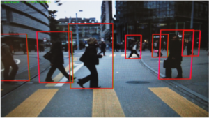
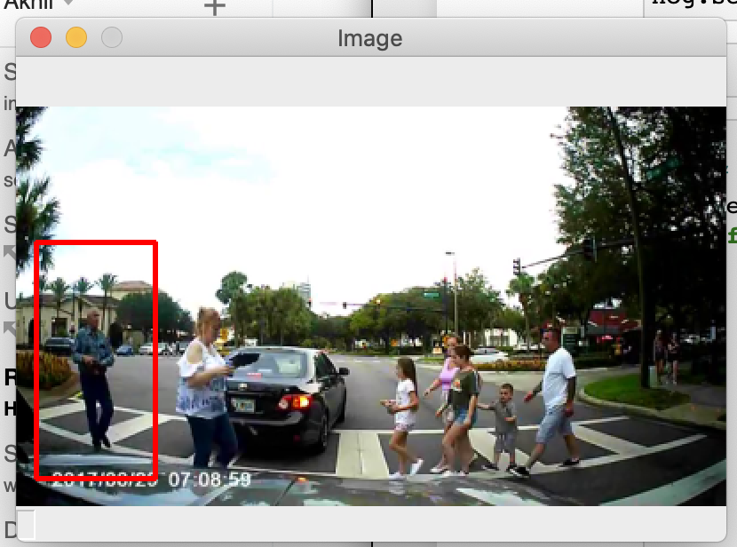
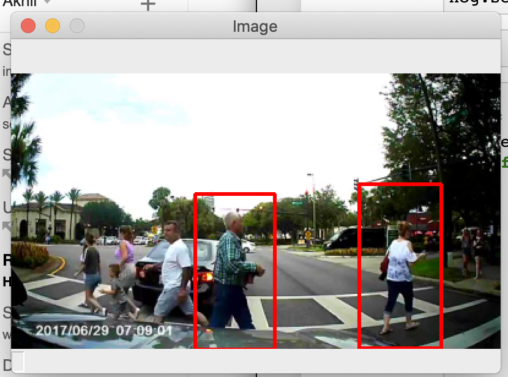
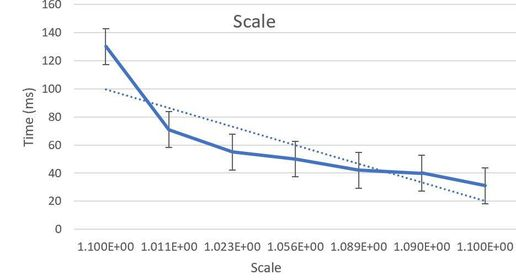
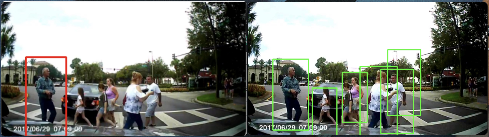
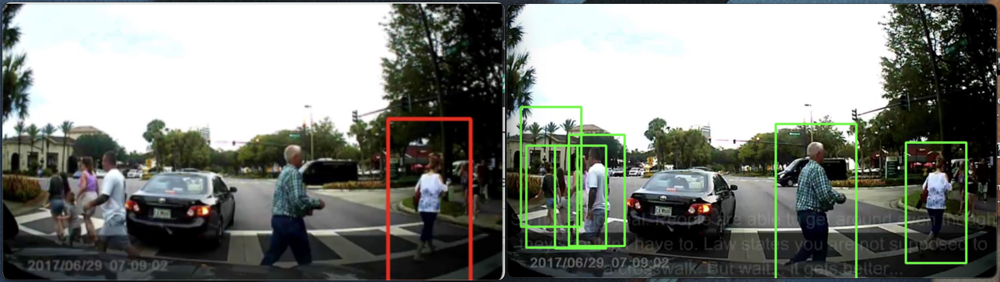
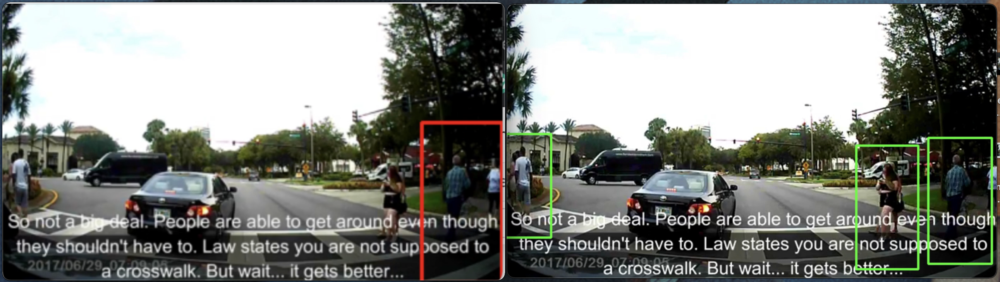
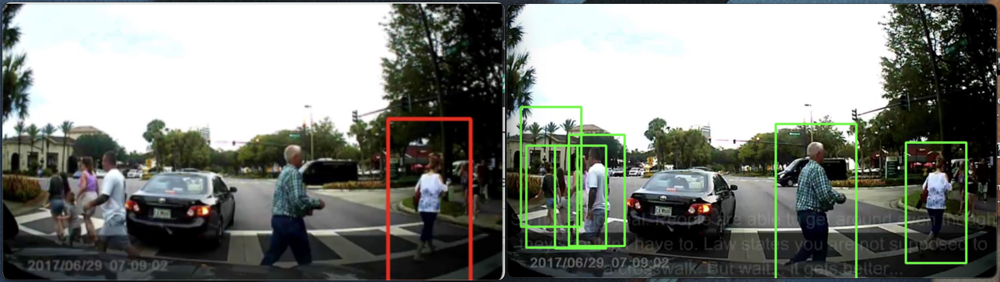
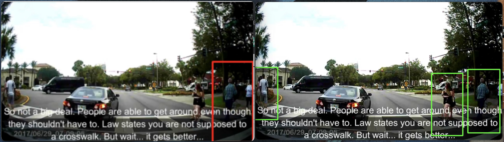

Pedestrian Detection at Stoplights and Crosswalks
Preethi Ramamurthy & Akhil BhasinFall 2020 ECE 4554/5554 Computer Vision: Course Project
Virginia Tech
Abstract
When crossing roads and driving vehicles, staying alert for any surrounding movements and being attentive to road signs and stop lights is of the essence. It is important to detect different components when it comes to intersections (crosswalks and stop lights) to ensure everyone’s safety. This project will focus on detecting pedestrians from a video.Teaser figure

Introduction
This problem is crucial to the development of self-driving cars. The promise for self-sufficient and truly autonomous cars has been around for a century, but true progress was made by advancements in computer vision and machine learning. This problem of detecting obstacles in real-time while the car is in motion is key to producing a safe autonomous vehicle. Industry leaders in this field have advanced our problem to detect and label all obstacles a car sees and based on the data the car decides to slow down, speed up, or maneuver around. These notifications given to a car allow safe driving and a safe environment for other cars to drive in as well. Another application of this problem is pedestrian crossings. Cameras could be placed to detect if a pedestrian is going to cross. Once detected, a light can flash to let oncoming vehicles know that an object would be crossing their path. One way to accomplish this is seen in self-driving cars which use LIDAR(light detection and radar) technology to “see” other objects in real-time. In our case however, we will provide our program with training and test data. This data will include videos which will be analyzed by the program.Approach
The goal of this project is to recognize when a pedestrian is on a crosswalk. There have been several approaches to this problem. Some approaches use CNN while others use pre-existing OpenCV methods of person detection. In our project, we tried to implement the best approach by attempting both. The goal was to have detection with the least error.If implementing from scratch, a machine learning algorithm would’ve been needed with a very large training set in order to detect pedestrians.
We decided to not do this and use the OpenCV approach with borrowed code which implemented OpenCV’s built-in method to detect pedestrians. It has a pre-trained HOG(Histogram of Oriented Gradients) + Linear SVM model to detect pedestrians in images and video streams. We found this on geeksforgeeks as well as other online projects that use the same implementation. This code was built upon by improving the accuracy and testing HOG parameters that result in the least error.
A problem that we faced was a lack of a proper dataset of Pedestrian videos. We found a dataset of images of pedestrians but could not find many videos which is why we decided to test our program out on the images and then use the best implementation on a video we found on youtube of a busy crosswalk.
Experiments and results including Qualitative Results
The pre-trained OpenCV method (HOGDescriptor_getDefaultPeopleDetector()) was implemented in order to reach the goals of this project. Initially, to test whether or not the program worked, a single test video with pedestrians was used. This video was found on youtube and was read by the algorithm frame by frame. Some pedestrians were detected while many others were not.


We were not content with the results. As there were several false negatives.
This meant that we needed to work on the accuracy of this algorithm by changing its parameters in order to get the least false negative detections.
The HOG algorithm uses detectMultiScale(image,winStride, padding, scale) to detect all the regions in the image that have a pedestrian inside it.
The image parameter is the path to the input image. The winStride is the step size in the x and y direction of the sliding window. The padding controls the number of pixels the ROI is padded with prior to HOG feature vector extraction and SVM classification. The scale controls the scale of the image pyramid (allowing to detect people in images at multiple scales).
We needed to test which parameters result in the least amount of false negative frames. To do this, we found a dataset of 170 images of pedestrians. Each of these images has at least one pedestrian.


Increasing Accuracy
Our original implementation resulted in detection where there would be multiple, overlapping bounding boxes./img25.png)
/img12.png)
To fix this problem, we implemented non-maxima suppression which essentially bounds multiple boxes into one.
/img25.png)
/img12.png)
This helped reduce the number of false-positives reported by the detector and also helped when several pedestrians were overlapping in the video.
Changing Padding
As suggested by pyimagesearch, “Adding a bit of padding surrounding the image ROI prior to HOG feature extraction and classification can actually increase the accuracy of your detector,” we increased the padding and found that (16,16), bottom, was the most accurate as compared to (8,8), top./img89.png)

Top: (8,8) Bottom: (16,16)
Changing Scale
The final parameter we changed was the scale. We found that a smaller scale greatly increased the amount of time it took to process each image but was better in detecting pedestrians further away. It also resulted in multiple, overlapping bounding boxes regardless of our NMS implementation. We decided to not decrease this value because our end goal was to detect in a video format. The longer it takes the process each image, the longer it will take to process the whole video which has multiple frames. This is not preferred since future work on this problem would be to implement this in real-time. Also, we realized that in our data set, 1.05 was the best middle ground and used that as our scale.



Left Scale: 1.01 Right scale: 1.05
Left Scale: 1.01 Right scale: 1.05
Implementing Detection to Video
We used the most accurate parameters for detection in our video and false negative rate decreased greatly. Most of the frames detected each pedestrian. We were content with the results.



Before and After


Before and After
Error Analysis
We realized that any errors that occurred were partly due to the quality of the video we tested. Normally, the HOG descriptor doesn’t perform as well in the presence of motion blur. While this was improved by the use of the non-maxima-suppression, it still resulted in some error. Another problem in our test video was that there was text that was added in which would have affected detection. If we had a video with a better frame-rate and resolution, our implementation would detect essentially all pedestrians with little error.Conclusion/Future work
The goal of this project was to create a way to identify pedestrians from a video. This was done through the use of the OpenCV software library-- specifically the built-in histogram of oriented gradients and linear support vector machines (HOG and Linear SVM) detector. The initial program had the parameters to pick up some pedestrians while leaving out others. Through the implementation of the HOG and Linear SVM detector, all of the pedestrians were detected more accurately. The detector used padding and scaling to pinpoint the pedestrians properly. Scaling allowed for the use of frames to determine the amount of time it took to identify the pedestrians: the larger the scale, the less time it would take to detect the pedestrians. The shorter periods of time made it possible to generate false positives. This was taken care of using the padding method. Padding allowed for frame by frame detection: this reduced the number of false positives per frame, resulting in a decreased number of false positives overall. Additionally as seen in the images provided above, the accuracy went up-- initially different parts of the same pedestrian were detected separately. With the detector implemented, the program was able to identify the pedestrians, providing more accurate information. Pedestrian detection is only the first step into a vast study-- it could be further researched into animal/pet detection. The application of this program was for the use of autonomous vehicles. Detecting pets and animals would be vital to this in many situations (i.e. a pedestrian and a dog are waiting at a crosswalk, the vehicle detects the pedestrian however the dog runs loose-- the vehicle would have to detect the dog to ensure that it does not cause it any harm).References
[1]https://www.geeksforgeeks.org/pedestrian-detection-using-opencv-python/?fbclid=IwAR2D_cg7z65Vy1A_RwEZwqPDcz78BHj4MARz5CXtiWE3fUHuiKCt6itMD28[2]https://www.pyimagesearch.com/2015/11/09/pedestrian-detection-opencv/?fbclid=IwAR0X62qtcsdYUfNkpn38Cjio8Q7YeIeS29BWrIbSuumH2SB5uPFyrSthJkI
[3]https://www.kaggle.com/alincijov/penn-fudan?select=PNGImages&fbclid=IwAR1NAbGZmoaEMTvjOIUz7hnz-hsmN_G21NRQweKFcgFK495KSbJEy_Oq2Fc
[4]https://www.pyimagesearch.com/2014/11/10/histogram-oriented-gradients-object-detection/